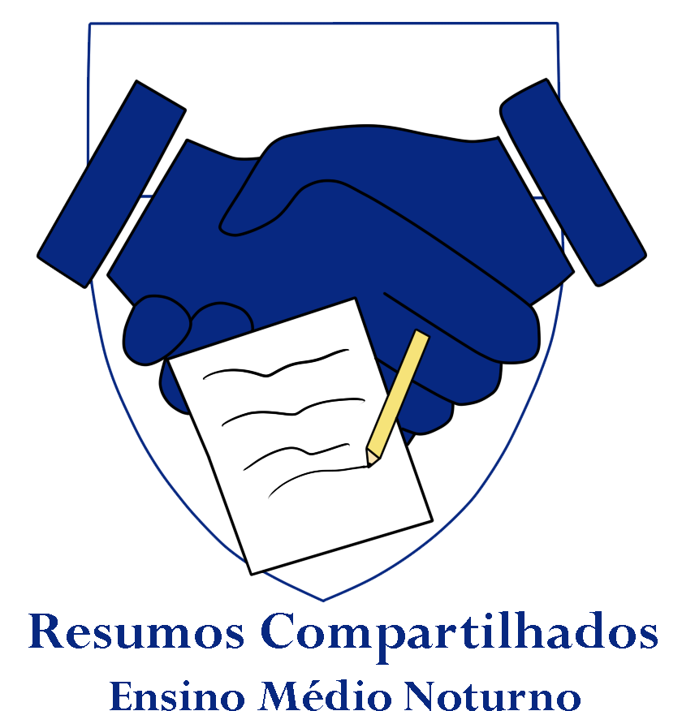

Meu nome é Henrique, um jovem entusiasta em tecnologia e apaixonado pela arte de criar arte. Durante esse meu curto período de vida já criei quase de tudo: vídeos, histórias, desenhos, roteiros, programas, jogos e, mais recentemente, SITES!
E como você pode ver, eu decidi fazer este site para praticar as minhas habilidades de HTML5 e CSS3, as quais eu peguei pra estudar desde o fim de 2024.
Como meta profissional, pretendo me formar em Sistemas de Informação e atuar na área de computação, além de continuar os meus estudos nela.
Meu apelido na internet é Henryttwoshoes, esse que é frequentemente apelidado² por Henry Dois Sapatos, Henry Dois Tênis, Henry Two Two e outros que eu não me recordo no momento em que estou escrevendo este texto.
Sobre os meus gostos pessoais, eu me considero um grande amante de jogos indies, séries diversificadas e um "Average Enjoyer" de trilhas sonoras de obras de ficção, jogos e outras composições de áudio visual. Acredite, eu gosto muito de ouvir músicas desse tipo :).
De resto é isso, sou um jovem dinâmico aprendendo muito com a vida e vivendo novas aventuras.
Meus projetos
Eu tenho vários projetos criativos que criei, adiministrei, crio e adiministro até os dias de hoje. Vou listar alguns deles aqui caso queira ver sobre eles, talvez você vá se interessar por um ou outro.
Meu canal no Youtube
Eu posto alguns vídeos no youtube pelo meu canal oficial, aonde falo sobre assuntos diversos, mas na maior parte dos vídeos eu estou falando sobre algum jogo ou coisa da realidade que eu gosto ou que eu acharia interessante falar sobre.
A maioria dos vídeos possuem roteiros que eu mesmo escrevo, mesmo eles não saindo tão bons, mas é um trabalho que eu me empenho bastante e gosto de fazer. E periódicamente, em algum momento do ano surge uma ideia pra vídeo e quando eu arranjo tempo eu acabo me encontrando trabalhando em um vídeo novo. Passando por um processo devagar e trabalhoso de: [escrever o roteiro > gravar o áudio > editar o vídeo] e que as vezes possui um estágio adicional diferente desses ou igual, mas em síntese, quase todo vídeo segue esse mesmo processo.
Minha resenha sobre a série de livros "O Espadachim de Carvão", provavelmente um dos melhores vídeos que eu já fiz no meu canal.
Projeto Resumos Compartilhados
Esse foi um projeto contínuo que eu fiz no Ensino Médio. Basicamente é um "site" feito na gambiarra do Google Docs. Em suma, enquanto eu ia atendendo às aulas da escola das diversas matérias escolares desse período, eu preenchia documentos de resumos enumerados no google docs e deixava todos eles elencados em um documento principal. A proposta era produzir materiais de revisão para todos os alunos do meu turno(noturno) com as anotações e o meu próprio entendimento das aulas.

Logo oficial do Projeto Resumos Compartilhados, feita por mim usando o Paint Tool Sai e o Photoshop
O documento principal ainda está no ar e se você aí quer revisar para algum concurso ou prova, talvez valha a pena dar uma olhada, apesar de que, esse material não foi feito por alguém especializado em nenhuma das matérias do Ensino Médio e é apenas o registro de um mero estudante durante o seu período dos 15 aos 17 anos.
Apesar da proposta de colaborar com outros alunos, ninguém além de mim tinha saco e tempo pra atualizar os resumos então acabou que o trabalho principal ficou por minha conta mesmo. E é claro, por conta do Novo Ensino Médio e o fato de que nem todas as matérias do colégio tinham provas, acontece que eu não escrevi resumos de todas as disciplinas, mas, pelo menos as principais estão com resumos feitos desde a primeira série.
Eu também sou muito fã da arte de criar jogos - como você já leu na primeira seção - e em 2019, depois de fazer um curso de games 2D, eu aprendi a criar jogos em uma engine velha mas que satisfaz as minhas necessidades criativas: a Construct 2.
Desde então eu continuei brincando e experimentando algumas coisas nessa engine e nesse meio tempo, consegui criar uns projetos até que interessantes.
Apesar de querer entrar na área de desenvolimento, guardo uma paixão enorme pela experiência de criar jogos e coisas do tipo, então, enquanto eu ainda tiver tempo e força de vontade, com certeza dedicarei um tempinho para essa área. E quem sabe algum dia eu não faça um outro curso de desenvolvimento de jogos para aprender uma engine um pouco melhor e menos limitada do que a Construct.
A maioria dos meus jogos estão publicados no site oficial da empresa que gerencia o construct, o Scirra Arcade, no meu perfil oficial, Henryttwoshoes. Nele estão alguns jogos terminados, outros não e outros são só testes que eu fiz há muito tempo atrás.
Dentre alguns que eu acho muito legal mencionar, estão os meus três projetos bem trabalhados:
Flappy Pudim - um jogo Flappy Bird só que com pudim;
Stickvania - meu primeiro projeto criativo de video-game de toda a minha vida;
YEEMO - Meu último jogo trabalhado desde 2024, um jogo de tiro topdown com algumas referências a youtubers que eu gosto.
Capas dos jogos citados acima, cada imagem sendo, respectivamente, o banner de Flappy Pudim, Stickvania e YEEMO.
De resto, acho que era isso que eu tinha a dizer sobre os meus projetos. Se você gostou de algum deles, sinta-se livre para dar uma olhada, talvez eles vão te ajudar ou te entreter. Por ora, eu ainda sou um jovem que tem muito a aprender e vou continuar criando enquanto eu me conhecer por gente.
Curiosidades sobre mim
Por que o nome "Henryttwoshoes"?
Isso tudo começou lá pra 2018/2019 em que eu queria trocar o meu nick na internet e na PSN, visto que o nick que eu tinha era bem ruim e fazia as pessoas me chamarem pelo nome errado. Então, quando saiu a atualização do PS4 em que tornou-se possível mudar seu nick uma vez de graça, eu decidi mudar finalmente.
Mas por que "Henryttwoshoes"? É uma história. Basicamente tinha um youtuber do qual o trabalho eu gostava muito, que usava o nick de "Jimmy Two Shoes" no twitter. Então, por algum motivo, eu achei o nick dele irado e decidi me inspirar para fazer o meu. E foi aí que eu fui trocar ele na PSN.
Mas e aí? Da onde veio o "-tt-" do meio do nome? É bem simples, foi um problema comum de registro de nicks. Literalmente já tinha alguém com o nome de "henrytwoshoes" na PSN e eu fiquei pensando em como eu poderia contornar o fato de que não dava para colocar esse nick, e foi aí, que surgiu o segundo t, como uma maneira de fazer com que o meu nick fosse aceito na PSN.
Meu perfil na Playstation Network(PSN), a foto é do Ludens, uma figura do jogo Death Stranding, um dos meus jogos favoritos.
Meu gosto por stickmans
Desde muito pequeno eu sempre fui muito interessado em desenhar e imaginar figuras de palito, algo que é comum pelo menos na maioria das infâncias da minha geração(2007). Mas, eu sempre guardei um fascínio especial por este tipo de representação figurativa, quase sempre eu desenhava cenas com stickmans nos meus cadernos de desenho infantis, stickmans esses que eu chamava carinhosamente de "pessoinhas" visto a minha falta de costume com termos estrangeiros.
Mural com 10 personagens stickmans que eu desenhei no Flash por volta de 2020. Esse foi o ápice da minha imaginação nesse estilo
E nesse processo eu também ia aprendendo a mexer em computadores e acessar a internet na grande era de ouro dos jogos da web feitos com Flash, oque me fez ficar fascinado com obras como Henry Stickman - série de comédia essa que recebeu um remaster na Steam - e os incontáveis vídeos de animação da comunidade do Hyun's Dojo. E desde então, eu cresci gostando desse tipo de arte.
Inclusive, eu já tentei ser animador em Flash por um bom tempo nos anos de 2016 a 2018, usando mesa digitalizadora - nesta época eu já tinha a minha primeira mesa - e com o Flash CS6 da Adobe baixado, mas, não rendeu muito e nem foi muito pra frente por falta de vontade e imaturidade minha.
Minha segunda tentativa de fazer uma foto de perfil para mim na web, feita no Flash também.
Mas o impacto que esse estilo artístico teve em mim eu sinto até hoje, vira e mexe eu ainda acompanho streams e animações de alguns animadores do Hyun's Dojo famosos ou de outros. Alguns nomes que posso mencionar aqui são Alan Becker e Gildedguy.
De resto, eu acho que stickmans vão aparecer nos meus sonhos e pensamentos por um bom tempo ainda.
Por que gosto de criar e minha trajetória
Desde que me entendo por gente, sempre fui alguém que gosta de criar e explorar ferramentas criativas. A verdade é que fui muito influenciado pela minha mãe, que sempre quis ser artista e passava horas pintando desenhos e quadros com tinta e lápis. Por isso, desde pequeno, fui incentivado a desenhar e criar minhas próprias composições.
No início, desenhava cenas, personagens e figuras simples com lápis de cor e papel, acumulando vários cadernos de desenho infantis que eu preenchia com diferentes ilustrações. Foi assim que nasceu meu amor pela arte de criar.
Um desenho antigo de uma ideia de mangá que eu tive com 11 anos de idade. Uma história de um "pato super sayajin" que vivia aventuras de anime shounen e dramas escolares juvenis.
Com o passar dos anos, desenvolvi o hábito de sonhar acordado — algo que faço até hoje — imaginando cenas, desenhos, jogos, histórias e muito mais. Esse costume foi muito alimentado pelas minhas caminhadas silenciosas no pátio da escola durante o Ensino Fundamental.
À medida que cresci, experimentei novas formas de expressar minhas ideias. Aprendi a criar desenhos digitais com mesa digitalizadora, produzir vídeos, desenvolver jogos e, mais recentemente, criar histórias para RPGs de mesa.
Desenho de token de um personagem de RPG de um amigo meu, para uma história no universo de Ordem Paranormal RPG. A imagem ilustra Jeff Smith, um cientista transtornado.
Mas por que gosto tanto disso e nunca me canso? Acho que é porque a criação me faz bem, tanto profissionalmente quanto psicologicamente. Quando não estou conversando com alguém ou jogando, costumo criar, pensar em ideias e me divertir com isso.
Acredito que todo esse investimento trará bons frutos no futuro. Por isso, recomendo a você, leitor, que também se dedique à arte e à criatividade. Ser criativo é uma habilidade cada vez mais valorizada, e eu realmente acredito nisso.
Posfácio
Aqui marco o fim do site. Provável que com o tempo eu vá atualizar ele com mais conteúdo e com mais polimento técnico mas por ora, é tudo oque eu tenho a dizer sobre mim em um único site.
Agradeço por ter lido até aqui e quem sabe a gente não se encontra pelo caminho.